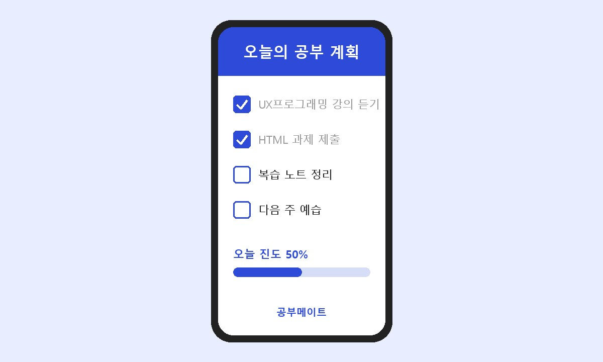

계획부터 복습까지, 매일 공부를 함께 챙겨 주는 스터디 플래너입니다.
계획은 세웠는데 며칠 지나면 흐지부지되지 않나요? 공부메이트는 해야 할 공부를 작은 단위로 나누고, 매일 얼마나 해냈는지 한눈에 보여 줍니다.

과목별 공부 계획을 체크리스트로 정리합니다.
일주일 동안 얼마나 공부했는지 그래프로 보여 줍니다.
정해 둔 시간이 되면 오늘 공부할 내용을 알려 줍니다.